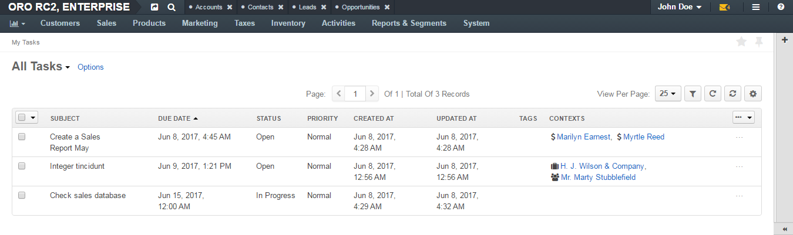
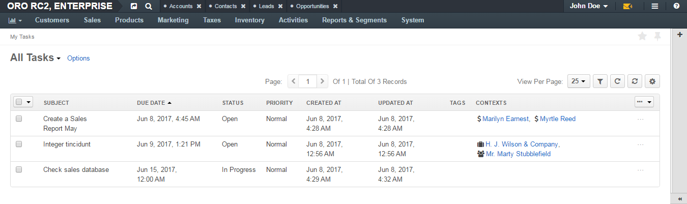

Tasks¶
In order to save information on certain actions to be performed or issues to be resolved by a user, you can create a task in one of the ways described below.
Create a Task¶
There are several ways to create a task:
- Use the Add Task action to create a task in the context of some entity record and define the user responsible.
- Use the Assign Task action on the page of the user responsible.
- Create a Task records in the Tasks grid.
Add a Task for Another Record¶
Important
By default, the list of activities available for each entity is determined by what is most commonly used by businesses. However, if your company’s work process requires it, you can always turn the desirable activity on for almost any entity (except technical ones). If you need particular activities to be enabled for an entity, contact your administrator, or see steps 4 and 5 of the Create an Entity action description
- Open the View page of a record the task is related to.
- Click Add Task in the actions tab.
- The Add Task page appears. The form has the following fields:
| Name | Description |
|---|---|
| Subject* | The task title. Must be defined. |
| Description | A free text tab. Contains the task description. The field may be left empty. |
| Due date | Defines the date the task is due from the calendar (if any). |
| Priority* | Defines if the task priority. The possible values are:
The field is by default set to Normal. |
| Assigned To* | Choose the user, to whom the task is assigned. By default, the field is by default filled in with name of the user, creating the task. |
| Reminders | Defines if a message must be sent to the user defined in the Assigned to field with regard to the task. Click the Add button to add a reminder.
Reminders cannot be defined if the due date hasn’t been defined. |
For example, we want Ellen Rowell from the sales to replace the email address of Jeffrey Maynard, who has recently changed his work.
We have created a relevant task on the View page of Jeffrey Maynard’s contact record. The task must be done within a week (till April 5th). An email will be sent to Ellen Rowell one day before the due date.

- Click the Create Task button and the Task will be added.
Assign a Task to a User¶
Navigate to the View page of the user record, for which the task is assigned.
Click Assign Task in the actions tab.
The Assign Task to {user name} page appears.
The form has the same fields as the “Add Task” form. The “Assigned to” field value is the user you have chosen, and it cannot be edited.
For example, we also need Ellen Rowell to find a new contact at Cal Stereo, where Mr. Jeffrey Maynard used to work. The task has no specific due date, but its priority is high.

- Click the Create Task button and the task will be added.
Create a Task from the Tasks Grid¶
Navigate to Activities > Tasks or click the :guilable`Tasks` button above your calendar.
Click the Create Task button.
The Create Task page appears.

The form has the same fields as the Add Task page. By default, the Assigned to field is filled with the user creating the task but it can be edited.
This is a particularly convenient way to create a task for yourself, as well as for other users.
View and Manage Tasks¶
Note
The ability to view and edit the tasks depends on specific roles and permissions defined for them in the system.
All the tasks can be viewed for the Tasks grid.
All the events added for a record are displayed and can be reached from the Record Activities section on the View page of this record:

- To see the details, click on the task title or the + to the left from it.
- All the tasks assigned to a user will appear in the User Tasks grid in the Additional Information section of the user’s View page.

From any of the grids above, you can manage the tasks using the action icons:
Tasks Assigned to You¶
Once you have logged into the system, you can see the Task grid in the My Tasks page.
 

Tasks, for which a due date has been defined will also appear in the My Calendar page:

Click on the task in the calendar to get to its information tab. Use the buttons at the bottom to manage the task.